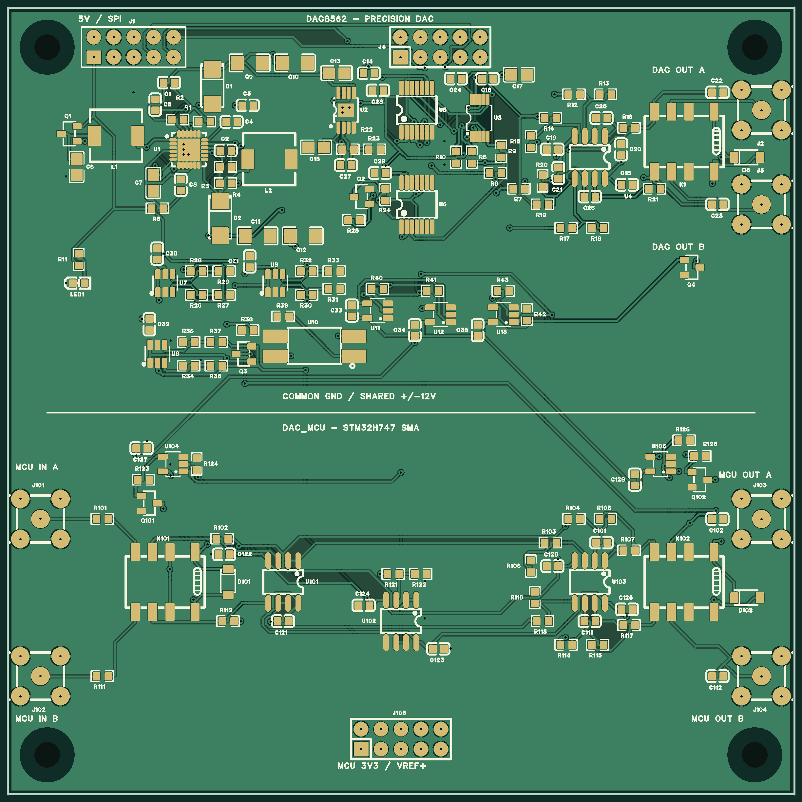

현재 작업 파일은 기존 TEST_DAC8562/DAC8562 module.eprj2입니다. 기존 Board1 / 1번 DAC8562 / 2번 DAC_MCU / PCB1을 유지했고 Panel1은 변경하지 않았습니다.
검증된 수정본 .eprj2 · 전체 프로젝트 내보내기 .epro2 · 작업 전 원본 백업 · 상세 검증 기록 · 회로도 변경 내역
| 항목 | 최종 확인 결과 |
|---|---|
| 회로도 ERC / PCB DRC | 모두 통과, 오류·경고 목록 0건 |
| 기판 | 100×100mm, 2층, M3 Ø3.2mm NPTH 고정홀 4개 |
| 상단 / 하단 | DAC8562 106개 / DAC_MCU 48개 부품 |
| 물리 부품 / 전기 패드 / 넷 | 154 / 489 / 90 |
| 독립적인 핀·넷 대조 | 회로도 / PCB Protel 내보내기 불일치 0 |
| 부품 외곽 겹침 | 0 |
| 저장된 배선 / 비아 / 접지 영역 | 1763개 LINE / 133개 VIA / 6개 SOLID FILL |
| 적용 후 복구 필요 여부 | 없음: Channel ID 이외 모든 PCB 데이터 유지 |
| 원본 백업 / Panel1 | 백업 보관 / 문서 데이터 해시 유지 |
PCB 저장·재열기 DRC · 두 페이지 ERC · 핀·넷 대조 · Apply 전·후 비교
참고: v3.2의 beta SYS_Tool.netlistComparison은 PCB net2 배열을 비워 반환하는 불일치가 남아 있습니다. 이를 “대조 통과”로 표시하지 않았습니다. 실제 DRC 통과와 별도 Protel 핀·넷 일치 검증을 근거로 합니다. 배선 엔진의 1777개 선분은 EasyEDA 저장 과정에서 1763개 LINE으로 정리됐습니다. 프로젝트 내보내기에 남은 비활성 과거 캐시는 상세 검증 기록에서 구분했습니다.
실크 보정 Gerber ZIP · 보정하지 않은 EasyEDA 원본 Gerber ZIP · 제조 데이터 변경 증빙 · 외곽·홀·비아 검사
별도 DFM 사본은 상단 실크만 솔더마스크 개구에서 약 0.15mm, 기판 외곽에서 0.15mm 떨어지도록 잘랐습니다. 동박·마스크·외곽·드릴은 원본과 바이트 단위로 동일하며, 편집 가능한 CAD의 라이브러리 실크는 보존됩니다. 제조사 DFM/조립 검토를 대신하는 출고 승인은 아닙니다. Combined PTH 드릴에 비아가 포함되어 있으므로 Via-only 파일은 별도의 중복 드릴 공정으로 적용하지 않습니다.

EasyEDA가 생성한 PCB 미리보기. 신호 처리 영역은 위·아래로 분리했지만 GND·전원·일부 제어 신호를 공유하므로 전기적 절연 설계는 아닙니다. SMA 몸체는 기판 가장자리 밖으로 돌출합니다.
접지면은 계산된 SOLID 영역 6개로 저장했습니다. 부품 이동이나 배선 변경 후에는 다시 계산해야 합니다. 기존 J1 범용 2×5 2.54mm 암헤더는 실제 결합 부품을 확인하고, 지정한 Susumu 정밀 저항은 별도로 구매해야 합니다.
고입력 임피던스 부하용으로, 50Ω 종단 부하 구동기는 아닙니다. 실물 제작·측정은 수행하지 않았습니다. 전원 기동·AVDD 오버슈트·DAC 초기화·릴레이 해제 시간·케이블 안정성·채널별 교정 오차는 시제품으로 확인해야 합니다. 제조·조립 주문은 제출하지 않았습니다.
Git 전달 여부는 실제 커밋과 원격 main HEAD로 확인합니다. 이전 별도 회로 프로젝트 및 output/validated-revision은 사용하지 마세요.